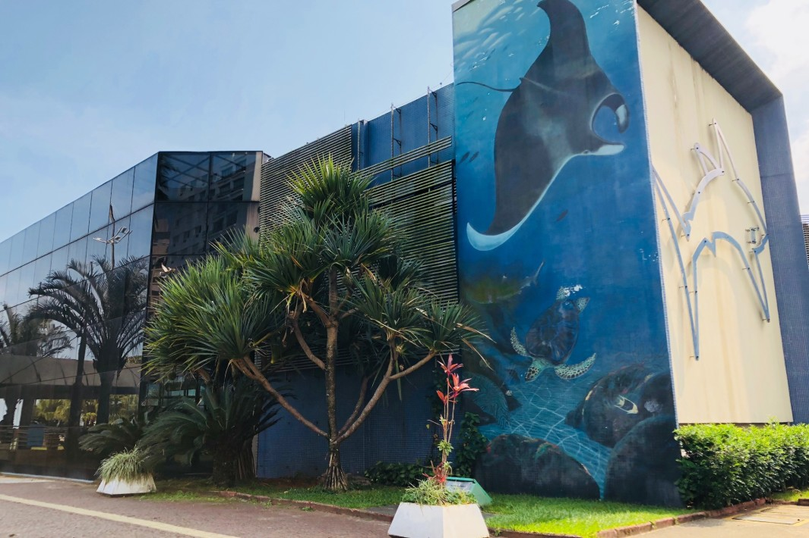
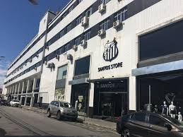
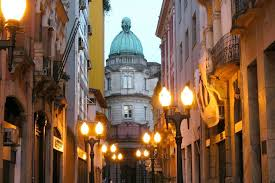

História
Origem: O Berço da Colonização
Santos nasceu quase junto com o próprio Brasil.
O Nome: O nome "Santos" vem justamente da Santa Casa de Todos os Santos, que acabou batizando o porto e a vila ao seu redor.
Localização Estratégica: Por estar em uma ilha (Ilha de São Vicente) com um canal profundo e protegido, Santos se tornou o local ideal para o escoamento de mercadorias.
Desenvolvimento: O Ciclo do Café
O grande salto que transformou Santos em uma potência mundial foi o café.
O "Ouro Negro": No século XIX, o café se tornou o principal produto da economia brasileira. Santos era o único caminho para exportar a produção que vinha do interior paulista.
A São Paulo Railway (1867): A inauguração da ferrovia que ligava Jundiaí a Santos facilitou o transporte do café pela Serra do Mar, fazendo o porto crescer exponencialmente.
Bolsa Oficial de Café: A cidade tornou-se tão importante que em 1922 foi inaugurado o Palácio da Bolsa de Café, onde os preços do grão eram fixados para o mundo inteiro.
Emancipação e Elevação a Cidade
Diferente de cidades que se separaram de outras, Santos foi um dos núcleos originais.
Elevação a Cidade (1839): Santos deixou de ser Vila e foi elevada à categoria de Cidade em 26 de janeiro de 1839.
Pioneirismo Político: Santos sempre foi uma cidade "rebelde" e progressista. Foi um dos maiores focos de resistência contra a escravidão (com o Quilombo do Jabaquara) e teve papel fundamental na Proclamação da República.
Pontos Turísticos de Santos
Santos equilibra perfeitamente o turismo histórico com o de lazer.
Aquário de Santos: Inaugurado em 1945, é o mais antigo do Brasil e um dos pontos favoritos das famílias.

Memorial das Conquistas (Vila Belmiro): Para os fãs de esporte, o estádio do Santos FC é um templo que celebra a era Pelé e a história do clube.

O Centro Histórico: Um passeio no Bonde Turístico leva você por prédios históricos preservados, incluindo o Museu do Café.

Curiosidades
O Porto: Santos abriga o Porto de Santos, o maior complexo portuário da América Latina, responsável por movimentar quase 30% da balança comercial brasileira.
Prédios Tortos: Devido ao solo argiloso e à fundação rasa de edifícios construídos entre as décadas de 40 e 70, Santos é famosa por ter diversos prédios inclinados na orla (muitos dos quais passaram por processos de recuperação recentemente).